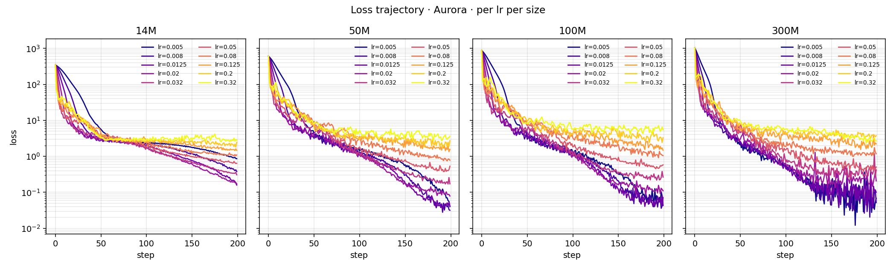
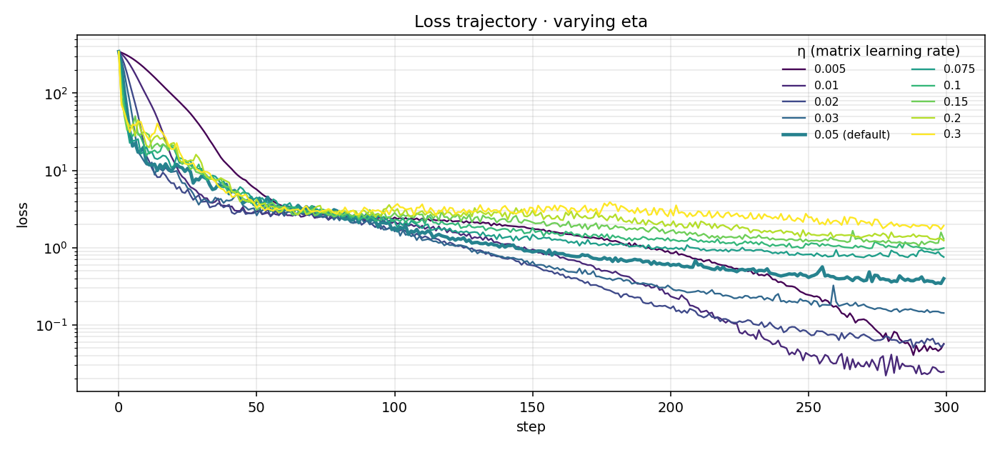
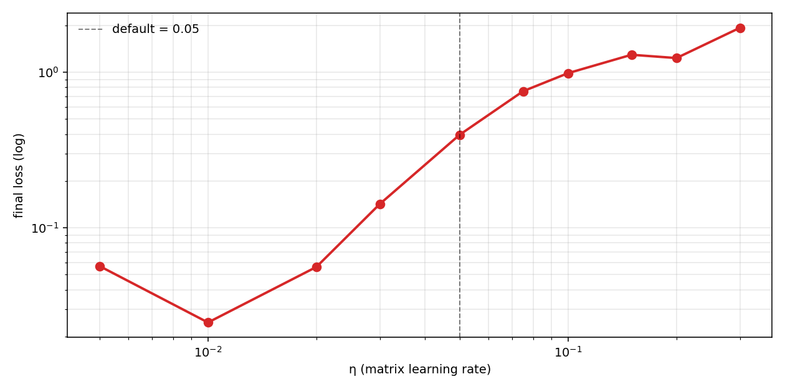
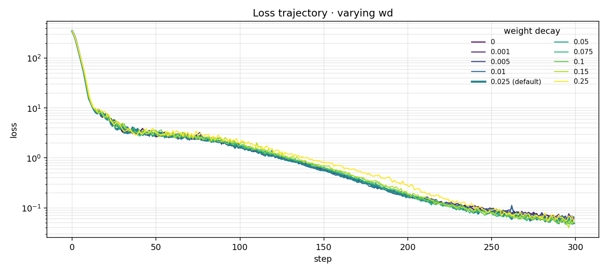
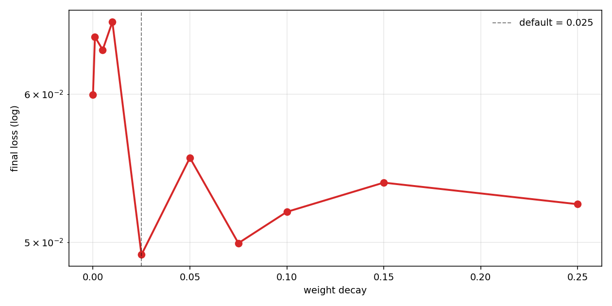
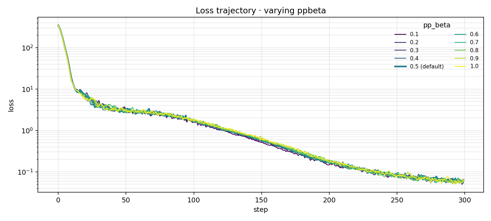
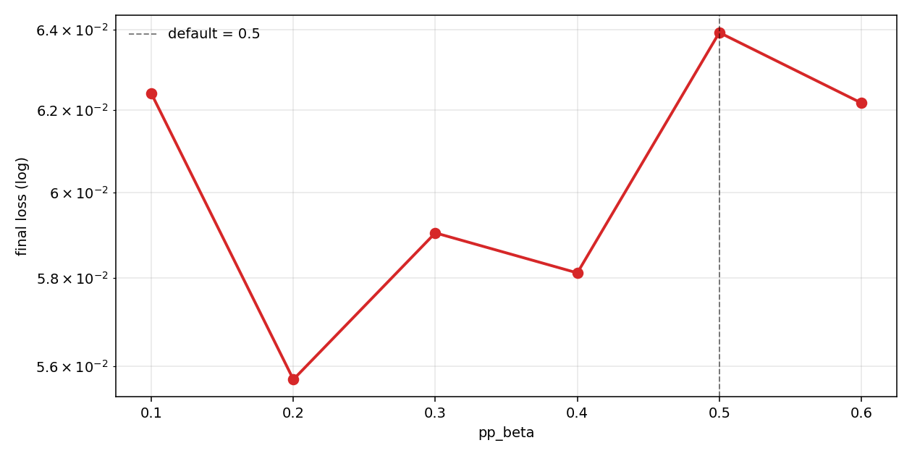
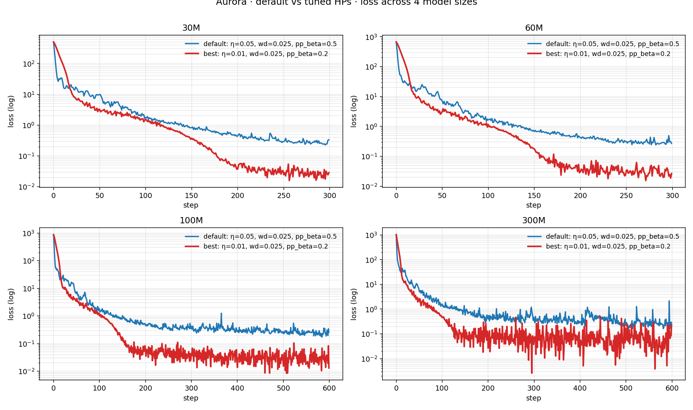

<meta charset="utf-8">
<link rel="stylesheet" href="../assets/theme.css">
<script src="../assets/theme.js"></script>

<style>
.md h1:before, .md h2:before, .md h3:before { content: none; }

article {
    max-width: 720px;
    margin: 0 auto;
    line-height: 1.6;
}

.blog-title {
    font-size: 2em;
    font-weight: normal;
    margin-bottom: 0.3em;
    text-align: center;
}

.blog-date {
    text-align: center;
    color: var(--muted);
    font-size: 0.9em;
    margin-bottom: 3em;
}

.blog-content {
    color: var(--text);
}

.blog-content p {
    margin-bottom: 1.5em;
}

.fig-nav {
    display: flex;
    gap: 0.4em;
    flex-wrap: wrap;
    justify-content: center;
    margin: 0.5em 0 1.6em 0;
}
.fig-nav a {
    display: inline-block;
    padding: 0.25em 0.7em;
    border: 1px solid var(--muted);
    border-radius: 5px;
    text-decoration: none;
    color: var(--text);
    font-size: 0.85em;
    background: transparent;
    transition: background 0.15s ease;
}
.fig-nav a:hover {
    background: var(--muted);
    color: var(--bg);
}

figure {
    margin: 1.5em 0;
    text-align: center;
}
figure img {
    max-width: 100%;
    border-radius: 4px;
    border: 1px solid var(--muted);
    background: white;
}
figcaption {
    color: var(--muted);
    font-size: 0.85em;
    margin-top: 0.5em;
    text-align: center;
}

.callout {
    background: var(--card, #f6f6f8);
    border-left: 3px solid var(--accent, #c12d1d);
    padding: 0.7em 1em;
    margin: 1.2em 0;
    font-size: 0.94em;
    border-radius: 3px;
}

table.summary {
    width: 100%;
    border-collapse: collapse;
    font-size: 0.9em;
    margin: 1em 0;
}
table.summary th, table.summary td {
    padding: 0.4em 0.6em;
    text-align: left;
    border-bottom: 1px solid var(--muted);
}
table.summary th {
    font-weight: 600;
    color: var(--muted);
}
table.summary td:first-child {
    font-family: "SF Mono", Menlo, monospace;
}

.cite-block {
    margin: 3em 0 1em 0;
    font-size: 0.9em;
}
.cite-block .cite-header {
    display: flex;
    align-items: center;
    gap: 0.6em;
    margin-bottom: 0.6em;
}
.cite-block h3 {
    margin: 0;
    font-size: 0.95em;
    font-weight: 600;
    color: var(--muted);
    text-transform: uppercase;
    letter-spacing: 0.08em;
}
.cite-copy-btn {
    background: transparent;
    border: 1px solid var(--muted);
    color: var(--muted);
    font-family: inherit;
    font-size: 0.78em;
    padding: 0.18em 0.6em;
    border-radius: 4px;
    cursor: pointer;
    letter-spacing: 0.04em;
    transition: background 0.15s ease, color 0.15s ease;
}
.cite-copy-btn:hover {
    background: var(--muted);
    color: var(--bg);
}
.cite-copy-btn.copied {
    background: var(--muted);
    color: var(--bg);
}
.cite-block pre {
    margin: 0;
    font-family: "SF Mono", Menlo, monospace;
    font-size: 0.84em;
    line-height: 1.45;
    overflow-x: auto;
    white-space: pre;
}
</style>

<article>

<div class="blog-title">Exploring Aurora's Hyperparameters</div>
<div class="blog-date">May 21, 2026</div>

<div class="blog-content">

**TL;DR**

[Aurora](https://github.com/tilde-research/aurora-release) is a Muon-family optimizer from Tilde that augments the polar Newton-Schulz step with an iterative row-projection to enforce row-uniform updates on rectangular weight matrices.  I wanted to spend the evening figuring out the most optional hyperparams, enjoy!


## Setup

A standard pre-norm decoder-only transformer:

- **Block**: `x + Attn(RMSNorm(x))` then `x + SwiGLU(RMSNorm(x))`
- **Attention**: `nn.MultiheadAttention(d, h, bias=False)` with a causal mask
- **SwiGLU FFN**: `w3(SiLU(w1·x) ⊙ w2·x)`, all `bias=False`
- **Embeddings**: learned additive positional; output head tied to input embedding


Every weight Aurora touches is rectangular except `attn.out_proj` (`d × d`, where Aurora reduces to Muon). Per layer: 6 rectangular matrices + 1 square. Total per-block body cost ≈ `16d²` params (`4d²` attention + `12d²` SwiGLU with `ff=4d`).

Dataset: **Tiny Shakespeare** (char-level, vocab=65, ctx=256). 


## LR sweep across model sizes
<a id="lrsweep"></a>

Four model sizes (14M, 50M, 100M, 300M actual params), ten log-spaced learning rates from `0.005` to `0.32` (a 64× range), `n_steps=200` each. Everything else fixed at Aurora's defaults: `wd=0.025`, `pp_beta=0.5`.

<figure>
  
  <figcaption><strong>Fig 1.</strong> Loss vs step, four panels (14M / 50M / 100M / 300M). Within each panel, one colored line per learning rate (10 total, viridis-colored).</figcaption>
</figure>

As model grew, I did see an increase in loss instability with lower lr. I later discovered it was floating point bug, where in Aruora's NS I was casting bf16 as well as the row-projection iteration, which
made it worse as well, the pattern of lower lr equating to lower loss is still true, just so happens to be instable. 

Code I'm referring to: 

```python
D = 1.0 / row_norm                          # fp32 here
for k in range(pp_iterations):
    U = polar(D * G32)                      # ← bf16 round-trip inside polar()
    if k < pp_iterations - 1:
        row_sq = U.pow(2).sum(dim=-1)       # bf16 → fp32
        D = D * (target / row_sq).pow(pp_beta)
```

A one-line fix is to keep the polar in fp32 (`X = G.to(torch.float32)` instead of `X = G.bfloat16()`); I haven't re-run yet, but that should remove most of the late-stage noise at low lr. 


<table class="summary">
<thead><tr><th>size</th><th>best lr</th><th>final loss</th><th>default lr's loss</th></tr></thead>
<tbody>
<tr><td>14M</td><td>0.0125</td><td>0.16</td><td>0.64 (lr=0.05)</td></tr>
<tr><td>50M</td><td>0.008</td><td>0.032</td><td>0.53</td></tr>
<tr><td>100M</td><td>0.005</td><td>0.043</td><td>0.58</td></tr>
<tr><td>300M</td><td>0.008</td><td>0.052</td><td>0.51</td></tr>
</tbody>
</table>

From 14M to 100M, the best lr roughly halves per 4× scale (0.0125 → 0.008 → 0.005).  Default lr=0.05 still loses by 10× regardless, and shows the lr decreases monotinically with scale. 

## Hyper-parameter sweep at 14M

Three separate 10-run sweeps at 14M (d=384, L=6), `n_steps=300`. Within each sweep only one HP varies; the other two hold at default. For the wd and pp_beta sweeps, the matrix lr is fixed at `0.02` (a sensible single-point baseline near the 14M optimum), since varying it would confound the HP-of-interest's effect.


### η — the matrix learning rate
<a id="etasweep"></a>

Ten log-spaced values from `0.005` to `0.3` (with `0.05` being the default).

<figure>
  
  <figcaption><strong>Fig 2.</strong> Loss vs step, one curve per η. The default η=0.05 converges to a much higher floor than the small-η runs.</figcaption>
</figure>

<figure>
  
  <figcaption><strong>Fig 3.</strong> Final loss at step 300 vs η. Dashed vertical = default (0.05). The minimum lives near η ≈ 0.02; loss bottoms out and then climbs sharply past η ≈ 0.1.</figcaption>
</figure>

0.01 seems to be a better η than default 0.05

### weight_decay
<a id="wdsweep"></a>

Ten values from `0` to `0.25` (default `0.025`). η held at 0.02, pp_beta at 0.5.

<figure>
  
  <figcaption><strong>Fig 4.</strong> Loss vs step, one curve per <code>weight_decay</code>. <em>(Asset not yet uploaded — placeholder.)</em></figcaption>
</figure>

<figure>
  
  <figcaption><strong>Fig 5.</strong> Final loss vs <code>weight_decay</code>. <em>(Placeholder.)</em></figcaption>
</figure>

Published default of 0.025 does represent best loss, as shown in the chart above. Loss seems similar across weight decay, so one can seek to do a much deeper 


### pp_beta — the row-projection damping exponent
<a id="ppbetasweep"></a>

Ten values from `0.1` to `1.0` (default `0.5`). `pp_beta` controls how aggressively the per-iteration row-norm correction is applied inside Aurora's outer polar loop:

```
for k in range(pp_iterations):
    U = polar(D · G)
    if k < pp_iterations - 1:
        row_sq = sum(U², axis=-1)
        D = D · (target / row_sq) ** pp_beta    # ← pp_beta lives here
```

`pp_beta=1` is full correction between passes; `0.5` is a damped half-step (default); `pp_beta → 0` decouples the iterations entirely.

<figure>
  
  <figcaption><strong>Fig 6.</strong> Loss vs step, one curve per <code>pp_beta</code>. <em>(Asset not yet uploaded.)</em></figcaption>
</figure>

<figure>
  
  <figcaption><strong>Fig 7.</strong> Final loss vs <code>pp_beta</code>. <em>(Placeholder.)</em></figcaption>
</figure>

The lowest final loss in the sweep lands at **`pp_beta = 0.2`**, below the default of `0.5`. Curious as to why, and I hypothesize that pp_beta 

## Tuned vs default across 4 sizes
<a id="tunedvsdefault"></a>


Two runs per size — `default` (η=0.05, wd=0.025, pp_beta=0.5) vs `tuned` which consists of (η=0.01, wd=0.025, pp_beta=0.2).

<figure>
  
  <figcaption><strong>Fig 8.</strong> Loss vs step, four panels (30M, 60M, 100M, 300M). Blue = published defaults, red = tuned triplet. </figcaption>
</figure>


I guess it's hard to call this the best hyperparams for aruora, but across a series of scaled training sets, we see that loss decreases slower, but a more stable run with fixed numerical percision would be better. 

If you found this interesting feel free to cite.

<div class="cite-block">
<div class="cite-header">
  <h3>Citation</h3>
  <button class="cite-copy-btn" onclick="(function(b){var p=b.parentElement.parentElement.querySelector('pre');navigator.clipboard.writeText(p.textContent).then(function(){b.textContent='copied';b.classList.add('copied');setTimeout(function(){b.textContent='copy';b.classList.remove('copied');},1500);});})(this)">copy</button>
</div>
<pre>@misc{manakelew2026aurorahps,
  author       = {Manakelew, Alazar},
  title        = {Exploring Aurora's Hyperparameters},
  year         = {2026},
  month        = may,
  howpublished = {\url{https://lazarus-931.github.io/blogs/aruora.md.html}},
  note         = {Blog post}
}</pre>
</div>

</div>

</article>

<script>
window.markdeepOptions = {
    tocStyle: 'none'
};
</script>

<!-- Markdeep: -->
<style class="fallback">body{visibility:hidden;white-space:pre;font-family:monospace}</style>
<script src="https://morgan3d.github.io/markdeep/latest/markdeep.min.js" charset="utf-8"></script>
<script>window.alreadyProcessedMarkdeep||(document.body.style.visibility="visible")</script>
